Medienübersicht
Alle Bilder, Audios und Videos dieser App mit ihrer Quelle und ihrer Lizenz.
Bilder
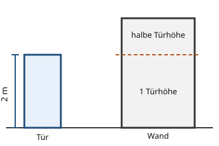
images/stuetzpunkt-tuer.svg© CC-BY-4.0Verwendet auf: Größen schätzen

images/lineal-bleistift.svg© CC-BY-4.0Verwendet auf: Länge, Masse, Geld und Zeit
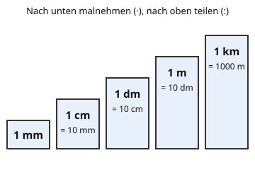
images/einheitentreppe-laenge.svg© CC-BY-4.0Verwendet auf: Einheiten umrechnen

images/einheitentreppe-weg.svg© CC-BY-4.0Verwendet auf: Einheiten umrechnen
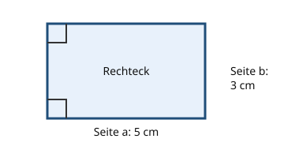
images/rechteck-merkmale.svg© CC-BY-4.0Verwendet auf: Das brauchst du für dieses Kapitel
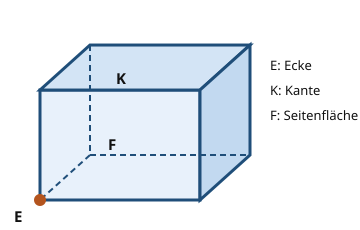
images/quader-merkmale.svg© CC-BY-4.0Verwendet auf: Das brauchst du für dieses Kapitel

images/quadratdezimeter.svg© CC-BY-4.0Verwendet auf: Flächen- und Volumeneinheiten
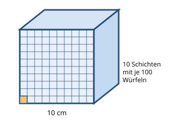
images/kubikdezimeter.svg© CC-BY-4.0Verwendet auf: Flächen- und Volumeneinheiten

images/einheitentreppe-flaeche-volumen.svg© CC-BY-4.0Verwendet auf: Flächen- und Volumeneinheiten

images/rechteck-eine-reihe.svg© CC-BY-4.0Verwendet auf: Fläche und Umfang: Rechteck, Quadrat
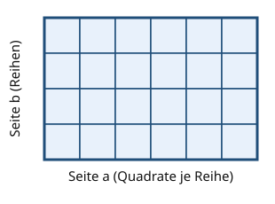
images/rechteckmodell.svg© CC-BY-4.0Verwendet auf: Fläche und Umfang: Rechteck, Quadrat
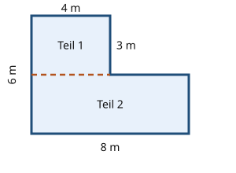
images/l-figur-zerlegt.svg© CC-BY-4.0Verwendet auf: Zusammengesetzte Figuren

images/l-figur-ergaenzt.svg© CC-BY-4.0Verwendet auf: Zusammengesetzte Figuren
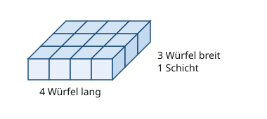
images/quader-schicht.svg© CC-BY-4.0Verwendet auf: Volumen und Oberfläche: Quader, Würfel

images/quader-aus-wuerfeln.svg© CC-BY-4.0Verwendet auf: Volumen und Oberfläche: Quader, Würfel

images/quader-netz.svg© CC-BY-4.0Verwendet auf: Volumen und Oberfläche: Quader, Würfel
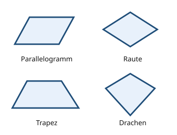
images/viereck-arten.svg© CC-BY-4.0Verwendet auf: Das brauchst du für dieses Kapitel

images/parallelogramm-hoehe.svg© CC-BY-4.0Verwendet auf: Das brauchst du für dieses Kapitel
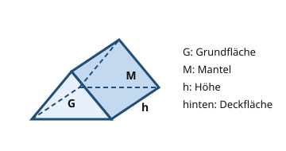
images/prisma-merkmale.svg© CC-BY-4.0Verwendet auf: Das brauchst du für dieses Kapitel
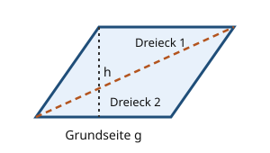
images/dreieck-halb.svg© CC-BY-4.0Verwendet auf: Fläche und Umfang: Dreieck, Viereck
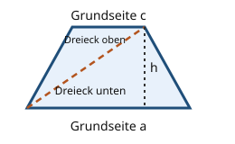
images/trapez-zerlegt.svg© CC-BY-4.0Verwendet auf: Fläche und Umfang: Dreieck, Viereck

images/raute-diagonalen.svg© CC-BY-4.0Verwendet auf: Fläche und Umfang: Dreieck, Viereck
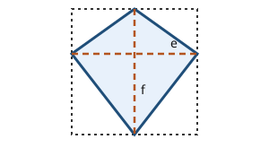
images/drachen-diagonalen.svg© CC-BY-4.0Verwendet auf: Fläche und Umfang: Dreieck, Viereck

images/prisma-stapel.svg© CC-BY-4.0Verwendet auf: Volumen und Oberfläche: Prisma

images/prisma-netz.svg© CC-BY-4.0Verwendet auf: Volumen und Oberfläche: Prisma